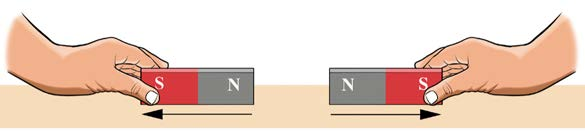
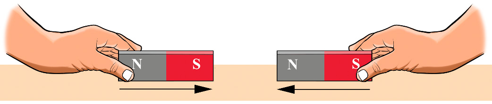

- 3. Move other parts of the bar magnet close to the pins or any kind of iron-related objects. What happened?
- 4. Repeat procedures 2 and 3 using magnets of different shapes. What happened when magnets of different shapes were used?
The shape of a magnet affects its ability to attract objects. Also, the poles of the magnet have the strongest force of attraction. Other parts of the magnets show a weaker force of attraction.
The law of magnetism
The basic law of magnetism states that; “unlike poles of magnets attract each other, while like poles of magnets repel each other”.
Activity 4: Observing the magnetic force between like and unlike poles of magnets
Materials: Two bar magnets and a table
Procedure
- 1. Put one bar magnet on the table.
- 2. Bring the N pole of the other magnet close to the N pole of the first magnet on the table as seen in Figure 3. What do you observe?

- 3. Bring the S pole of the other magnet close to the N pole of the first magnet on the table. What do you observe?
